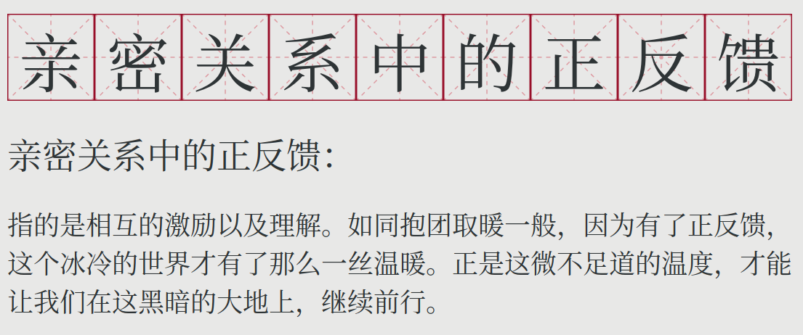

【理性鸡汤】亲密关系中的正反馈

让亲密关系中的正反馈更多一些，这样才可以让情感更加的可持续，而可持续的情感是健康的亲密关系的基础。
正反馈是什么？正反馈可以被定义为：彼此所感受到的善意进一步激励了善意的行动，并因此强化了感受到的善意。
在正反馈的情形中，每一方都有两个可控部分：
- 感受
- 行动
而正反馈所说的无非就是：一个感受促使了自己采取强化这一感受的行动。
用比喻来说，我们可以将正反馈看作滚雪球：雪球开始滚了之后，雪球越大，那么雪球的速度就越快，而高速滚动的雪球进一步导致了雪球的增大。
在前文“情感是消耗品”中，我们指出，情感跟意志力一样是消耗品。不要硬撑，因为这终归是一个消耗的过程，再多的初始库存也会被消耗殆尽。与其硬撑，我们应该主动耕耘一段亲密关系，让这段关系成为彼此间的互相激励而不是消耗。
这可以是在平常小事中体现出的感激之情。在各种小事上，一句“感恩”，或是下意识的帮对方整理衣领或是撩头发，都可以让彼此的心头一暖。这也是为什么笔者一直提倡在亲密关系中，我们要避免让时间冲淡彼此之间的礼节：这些小事上所体现出的礼节是让亲密关系保持正反馈状态的重要“催化剂”。
而正是这些看似微不足道的小举动，通过频繁密集的强化，形成了一股巨大的正反馈力量。在感觉方面则是觉得越相处越开心，而不是隐隐觉得心累或者是责任大。
有人会问，为什么这些小的举动可以造成这么显著的效果？原因就在于这些小举动的微小效果可以通过自我迭代放大。
正反馈的威力来自于迭代，而迭代则可以非常有效地放大初始倾向。
我们可以考虑一下最简单的迭代：一个数的迭代相乘。
1.01跟0.99的差别看上去非常小，然而经过1000次迭代相乘之后：
- 1.01成为了20959
- 0.99成为了0.00004317124
而各种微小的举动，就像那微小的1.01 - 0.99 = 0.02一样，将亲密关系从一个相互消耗的过程转化成了正反馈过程。
亲密关系中的正反馈是如此重要，以至于我们可以通过观察正反馈在一段关系中的分量来看出两个人的相处状态。当大部分人还在考虑“三观是否契合”，“是否门当户对”等指标的时候，“相处模式中正反馈占多大比重”是更为直观且有迹可循(可以通过观察具体的行动得出)的一个指标。
例子：笔者朋友的故事
笔者的两个朋友，从很早大家都没意识到的时候，笔者就通过恐怖的直觉感受到了他们最终会在一起。最终的结局我们也知道了，他们自然而然地走到了一起，以至于当事人都觉得怎么自己糊里糊涂就坠入了爱河。
然而笔者作为旁观者，却早已看透了一切，并且早早做出了他们会走到一起的预言。在当时，他们的世界并没有什么交集，而现实情况也似乎在全方位阻挠他们的走近。这是两个不同世界的人，以至于当我跟他们说出我的预言的时候，他们用关爱智障儿童的目光看着我。
我的这一直觉背后的具体原因也很简单：他们的相处是如此的自然，自然到让我们旁观者都由衷地替他们在一起而感到高兴。
在这个世界上，真正美好的事物是如此的令人赏心悦目，以至于旁观者都会感到发自内心的高兴。
他们会说着说着话就不约而同地跑偏，并且开启段子模式，并最终笑得前仰后合，笑累了就偎依到彼此的怀中。
在沮丧的时候，他们会由衷地给对方打气。或许他们自己都没意识到，然而笔者作为一名观察者，看到的是他们对视时眼神中透出的光：那是一种信任，感激，以及属于年轻人的活力。
这让我想到了瓦格纳的歌剧女武神。他们让我想到了这一歌剧中第一幕中的Sieglinde跟Siegmond：在剧情中，Siegmond在黑夜中负伤，在撤退的途中被Sieglinde收留。很快，他们“确认过眼神”并且一见钟情。笔者看到的是他们相互对视的眼神中自然流露出的怜爱。在那一瞬间，仿佛整个世界都获得了宽恕（redemption）。
笔者在前文说过，一段亲密关系中正反馈非常重要。而这就是绝佳的例子：两人在一起，就能源源不断生成另旁观者都感到欣慰的正能量，而这一正能量激励着彼此进一步给对方带来正能量。
见微知著，“正反馈”这一概念让我们可以解释很多模糊的直觉。在笔者的朋友的这一例子中，正反馈这一概念解释了我们为什么会感到他们俩的相处是如此的自然。往大里说，有了“正反馈”这一解释框架，我们可以根据观察做出有信心的预言。
例如，笔者现在在他们在一起了之后已经预言到他们最终会步入婚姻的殿堂。看着他们彼此的互相激励，笔者想到，所谓的“天造地设”，也就是这样了。
正反馈，如此平淡的一个词，在这一刻有了诗意的描述：
正反馈指的是相互的激励以及理解。如同抱团取暖一般，因为有了正反馈，这个冰冷的世界才有了那么一丝温暖。正是这微不足道的温度，才能让我们在这黑暗的大地上，继续前行。
相关阅读：